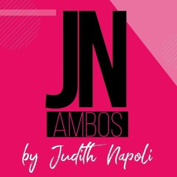
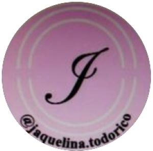
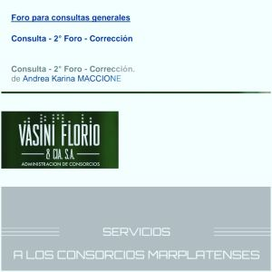
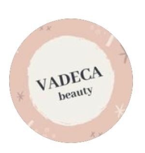

Conozca nuestros clientes
Esfuerzos colaborativos
JNambos
JNambos es una organización con muchos años en la confección de prendas destinadas a la salud entre otros, nuestri trabajo consistió en no solo encuestas de clima y de satisfacción sino tambíen en proporcionarle ideas creativas que vemos día a día aplica con mucha dedicación en esta gran organización, aplicamos mucho el explicarle porque y para que hacemos determinados estudios y seguimientos en forma escalonada y sencilla tanto para la organización como para el cliente logrando beneficios realmente gratificantes.
Jaquelina.todorico
JAQUELINATODORICO nos contacto con el fin de saber las necesidades de sus clientes de como es la visión del cliente para con su organización y que aspira de ellos como servicio, nos basamos en una encuesta de satisfacción y un ánalisis de sus redes sociales, obteniendo resultados muy satisfactorios para su organización tanto en mediciones como llegada al cliente realmente un placer trabajr con ellos.
Vasini Florio
Karina es parte de la administración Vasini Florio nos da mucho placer poder asesorarla en sus procesos y sus proyectos.
Vadeca
Vadeca nos confío su imagen de redes y su modo de momentar su venta online, obteniendose resultados muy positivos como la creación de vivos y la interacción de su dueña con los clientes y potenciales clientes. MUCHAS GRACIAS!!!.